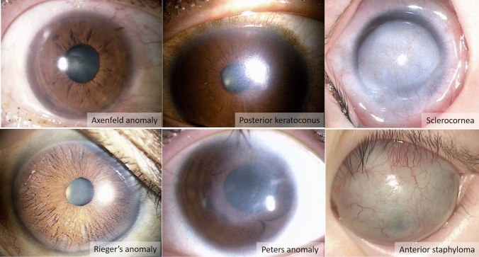
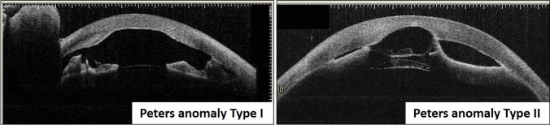
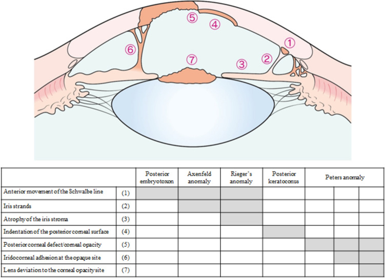
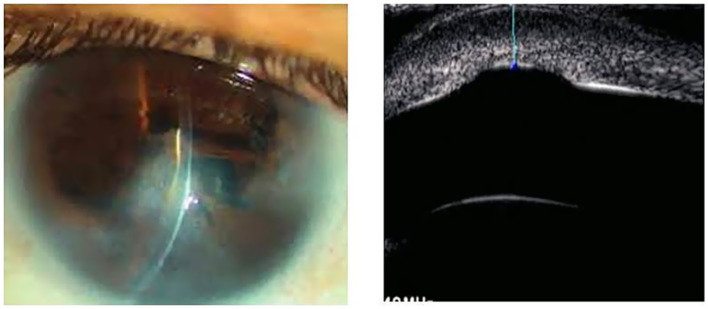
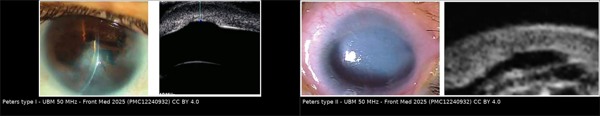
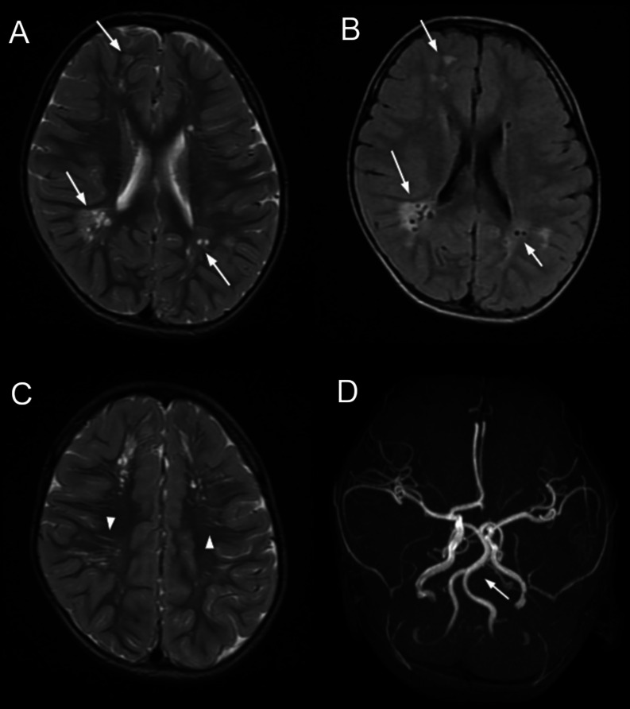

416 — Dị tật tiền phòng ở trẻ (Peters, Axenfeld–Rieger, sclerocornea): "đục giác mạc bẩm sinh" không phải một bệnh / Anterior segment dysgenesis
Tags: pattern:duc-giac-mac pattern:dinh-mong-mat-giac-mac pattern:loi-goc-truoc pattern:di-tat-tien-phong vung:mat vung:giac-mac vung:tien-phong vung:tre-em score:Peters-I-II-III score:ASD-do-nang protocol:UBM protocol:AS-OCT protocol:MRI-nao
Mức chắc chắn (certainty): tổng hợp y văn (literature synthesis) — tổng hợp guideline Nhật 2026 (tiêu chuẩn chẩn đoán + phân độ nặng I–IV), cohort 46 trẻ Peters (Front Med 2025), 31 mắt Peters (J Clin Med 2023), 111 bệnh nhân / 194 mắt (Ophthalmol Sci 2026) và ca ARS có tổn thương não trên MRI (Radiol Case Rep 2025). Số liệu đối chiếu chéo giữa các bài; hình thái đọc từ chú thích Fig gốc.
1. Tổng quan — vì sao "đục giác mạc bẩm sinh" là một PHỔ, không phải một bệnh
- Bệnh học (pathology): dị tật tiền phòng (anterior segment dysgenesis, ASD) là nhóm bất thường do tế bào mào thần kinh (neural crest) di cư/vào tiền phòng sai ở làn sóng 2 và 3, gây khiếm khuyết giác mạc – mống mắt – góc. Guideline Nhật 2026 xếp chung một phổ: vòng Schwalbe ra trước (posterior embryotoxon), Axenfeld anomaly (vòng Schwalbe ra trước + dây mống mắt), Rieger anomaly (+ teo mô đệm mống mắt, lệch đồng tử), posterior keratoconus, Peters anomaly, sclerocornea, anterior staphyloma.
- BA cơ chế gây mất thị lực (đọc theo thứ tự để không bỏ sót):
- Mờ trục quang học → nhược thị do che lấp (deprivation amblyopia) ngay từ những tháng đầu; đây là lý do phải hành động sớm hơn mọi "chờ lớn".
- Glaucoma thứ phát do loạn sản lưới bè – ống Schlemm; xuất hiện rất sớm hoặc nhiều năm sau.
- Bất thường toàn thân (tim, thần kinh, tuyến yên, răng, rốn) — chỉ điểm hội chứng.
- Ngưỡng định lượng phải nhớ:
| Thông số | Con số | Ý nghĩa thực hành |
|---|---|---|
| Tỉ lệ hai bên | ~75% (thống kê Nhật) | Khi một mắt Peters, mắt kia cũng Peters ở ~50%; 20–30% có ASD khác (sclerocornea, anterior staphyloma) |
| Bất thường toàn thân | 20–30% (Peters); ~60% nếu tính chậm phát triển | Hai bên → nguy cơ hội chứng cao hơn một bên |
| Glaucoma trong Peters | 30–70%; cohort 46 trẻ: 48,3% (14/29 đo được) | Phải đo nhãn áp mọi lần khám, không chỉ lúc mới sinh |
| Glaucoma theo độ nặng Peters | độ 1: 0% · độ 2: 52% · độ 3: 75% (31 mắt) | Độ càng cao → đặt vấn đề glaucoma ngay |
| Glaucoma theo tuổi | 0–6 tháng: 26,7% vs > 6 tháng: 53,6% (p = 0,03) | Không được "kết luận an toàn" ở lần khám 3 tháng |
| Trục nhãn cầu / đường kính giác mạc ở Peters | AL trung vị 20,84 mm (OD) / 20,19 mm (OS); HCD trung vị 11,5 mm | Có thể nằm trong giới hạn bình thường — không loại trừ Peters, không dùng để theo dõi glaucoma một mình |
| Glaucoma trong Axenfeld–Rieger | 50–70% | ARS là nguyên nhân hàng đầu glaucoma thứ phát ở trẻ bên cạnh PCG |
| Glaucoma trẻ em nói chung | 1/10.000–1/18.000 trẻ sinh sống | Nền để so sánh "hiếm nhưng không cực hiếm" |
- TẠI SAO phải dùng UBM/OCT tiền phòng chứ không phải "nhìn rồi đoán" (vật lý):
- Giác mạc đục chặn ánh sáng → soi sinh hiển vi chỉ thấy "mờ trắng", không thấy được bờ khuyết hậu mạc, dây mống mắt, hay thể thủy tinh có dính hay không.
- UBM (35–50 MHz): bước sóng ngắn, phân giải trục ~50 µm, xuyên ~4–5 mm → đi xuyên qua giác mạc đục để thấy mặt sau giác mạc, góc, mống mắt, thể thủy tinh, mỏm thể mi. Đây là lý do guideline 2026 khuyến cáo UBM để phân loại thể bệnh.
- AS-OCT (~1310 nm, phân giải trục ~5–10 µm): chi tiết hơn UBM nhưng xuyên kém — chỉ đọc tốt khi giác mạc còn tương đối trong hoặc qua vùng trong; với giác mạc đục dày, tín hiệu tắt sớm.
- Siêu âm B-scan (10–15 MHz): chỉ để loại bất thường hậu đoạn (bong võng mạc, u) khi không thể soi đáy mắt — không dùng để phân loại tiền phòng.
- Điều trị — điều guideline 2026 nói rõ (và hay bị làm ngược): ghép giác mạc xuyên (PKP) KHÔNG được khuyến cáo thường quy ("weak: suggest not to implement") vì tiên lượng dài hạn chưa rõ, nguy cơ tháo dịch kính – thủy tinh thể trong mổ và glaucoma thứ phát sau mổ; các lựa chọn thay thế: cắt mống mắt quang học (optical sector iridectomy), giãn đồng tử, xoay giác mạc. Khi buộc phải ghép, tỉ lệ thất bại mảnh ghép ở trẻ cao hơn người lớn rõ rệt.
2. Mẫu hình + chẩn đoán phân biệt theo vị trí (gamut)
- Mẫu hình A — đục giác mạc TRUNG TÂM hình đĩa ("doughnut"): Peters anomaly (khiếm khuyết hậu mạc trung tâm ± dây mống mắt = type I; ± thể thủy tinh/cataract dính vào bờ khuyết = type II); posterior keratoconus (hõm sau trung tâm, giác mạc trong); loét/viêm giác mạc bẩm sinh; đục giác mạc do chấn thương sinh (forceps).
- Mẫu hình B — đục TOÀN BỘ giác mạc, mất ranh giới rìa: sclerocornea (giác mạc "hóa củng mạc", không có rìa rõ, có mạch máu mọc vào) vs anterior staphyloma (giác mạc lồi ra trước, dính mống mắt toàn bộ) vs glaucoma bẩm sinh (PCG) giai đoạn muộn (giác mạc to, vết rạn Haab, phù giác mạc).
- Mẫu hình C — giác mạc TRONG nhưng bất thường góc/mống mắt: Axenfeld anomaly (vòng Schwalbe ra trước + dây mống mắt), Rieger anomaly (teo mô đệm mống mắt, lệch đồng tử – corectopia, đồng tử nhiều lỗ), aniridia/partial aniridia (PAX6), posterior embryotoxon đơn thuần (biến thể lành tính).
- Mẫu hình D — đục giác mạc + bất thường toàn thân: Peters plus (khe hở môi – vòm, chậm phát triển, tim bẩm sinh, B3GLCT/B3GALTL), Axenfeld–Rieger (PITX2 / FOXC1: bất thường răng – thiểu sản men, dây rốn thừa, bất thường xương mặt, tổn thương tuyến yên), hội chứng 22q11.2, mucopolysaccharidosis (đục giác mạc mờ đều hai bên + bất thường xương).
- Gamut theo vị trí (dùng khi mô tả): trung tâm giác mạc (Peters, posterior keratoconus) → rìa/góc (Axenfeld, Rieger, dây mống mắt) → toàn giác mạc (sclerocornea, staphyloma, PCG) → thể thủy tinh (Peters II: dính/cataract) → não – tuyến yên (ARS, Peters plus).

Sáu kiểu hình trong cùng một phổ: Axenfeld anomaly (vòng Schwalbe ra trước + dây mống mắt), posterior keratoconus (hõm sau trung tâm), sclerocornea (đục toàn bộ, mất rìa, có mạch), Rieger anomaly (teo mô đệm, lệch đồng tử), Peters anomaly (đục trung tâm + dính), anterior staphyloma (giác mạc lồi, mỏng, có mạch). Nguồn: Jpn J Ophthalmol 2026 (PMC13091872) Fig. 1, CC BY 4.0.3. Bảng so sánh phân biệt (ma trận đối chiếu)
| Thực thể (entity) | Hình ảnh điển hình | Chốt vào (rule-in) | Chốt loại (rule-out) | Gợi ý xác nhận |
|---|---|---|---|---|
| Peters type I | Đục trung tâm hình đĩa, khuyết hậu mạc đúng vùng đục, dây mống mắt bắc từ bờ mống mắt tới bờ khuyết | Khuyết hậu mạc trung tâm + dây mống mắt + thể thủy tinh KHÔNG dính | Thể thủy tinh dính vào bờ khuyết → type II | UBM 35–50 MHz; AS-OCT nếu giác mạc trong |
| Peters type II | Như type I + thể thủy tinh (hoặc cataract) đi ra trước dính vào bờ khuyết; tiền phòng nông | Thể thủy tinh/cataract áp vào mặt sau giác mạc tại bờ khuyết | Không có mô thể thủy tinh ở bờ khuyết → type I | UBM (chốt), AS-OCT; B-scan nếu đục dày |
| Peters plus | Peters + khe hở môi/vòm, chậm phát triển, tim bẩm sinh, đầu chi ngắn | Peters + ≥ 1 bất thường hệ thống đặc trưng | Chỉ có mắt, phát triển bình thường → Peters đơn thuần | Khám lâm sàng + di truyền (B3GLCT) |
| Sclerocornea | Đục toàn bộ hoặc gần toàn bộ, mờ như củng mạc, mất rìa giác mạc – củng mạc, mạch máu mọc vào, thường hai bên, không tiến triển | Không xác định được rìa + mạch hóa + đục đều | Còn rìa rõ, đục khu trú trung tâm → Peters; giác mạc to + rạn Haab → PCG | UBM (độ dày, góc), AS-OCT, khám toàn thân |
| Anterior staphyloma | Giác mạc lồi ra trước thành khối, mỏng, dính mống mắt toàn bộ, thường kèm glaucoma | Lồi ra trước + mống mắt dính lan rộng + mất mô đệm | Không lồi, chỉ đục → sclerocornea; lồi ra SAU → buphthalmos/PCG | UBM + đo trục; B-scan |
| Axenfeld anomaly | Vòng Schwalbe ra trước + dây mống mắt bắc qua góc; giác mạc trong | Dây mống mắt tới vòng Schwalbe ra trước, góc còn mở một phần | Teo mô đệm + lệch đồng tử → Rieger | Soi góc (gonioscopy) khi hợp tác; UBM ở trẻ |
| Rieger anomaly/syndrome | Teo mô đệm mống mắt, corectopia, đồng tử nhiều lỗ, vòng Schwalbe ra trước; ± glaucoma 50–70% | Corectopia + teo mô đệm + bất thường góc | Mống mắt bình thường, chỉ có dây → Axenfeld; mất gần toàn bộ mống mắt → aniridia | UBM/AS-OCT; MRI não + tuyến yên; khám răng – rốn |
| Glaucoma bẩm sinh (PCG) | Giác mạc TO (buphthalmos), phù giác mạc, rạn Haab, trục nhãn cầu dài, nhãn áp cao | Giác mạc to + rạn Haab + trục dài + nhãn áp cao | Giác mạc nhỏ/bình thường, không rạn, có khuyết hậu mạc → Peters | Đo nhãn áp, HCD, AL; UBM góc |
| Chấn thương sinh (forceps) | Đường rách tuyến tính giác mạc/mống mắt, một bên, bờ sắc, có bối cảnh đẻ khó | Rách dạng đường + tiền sử forceps | Khuyết tròn trung tâm bẩm sinh, không đường rách → Peters | Bệnh sử + sinh hiển vi |

AS-OCT: type I — khuyết hậu mạc trung tâm có dây mống mắt bắc tới bờ khuyết, mặt sau thể thủy tinh còn cách giác mạc; type II — thể thủy tinh đi ra trước, áp sát/đi vào bờ khuyết. Nguồn: Jpn J Ophthalmol 2026 (PMC13091872) Fig. 3, CC BY 4.0.
Sơ đồ + bảng: (1) vòng Schwalbe ra trước, (2) dây mống mắt, (3) teo mô đệm mống mắt, (4) hõm mặt sau giác mạc, (5) khuyết hậu mạc/đục giác mạc, (6) dính mống mắt–giác mạc tại chỗ đục, (7) thể thủy tinh ra trước. Bảng là ma trận đọc nhanh: mỗi thể bật đúng những ô tương ứng. Nguồn: Jpn J Ophthalmol 2026 (PMC13091872) Fig. 2, CC BY 4.0.Đọc theo 7 dấu hiệu (thay cho "nhìn độ đục")
- Vòng Schwalbe ra trước? → có: nghĩ Axenfeld/Rieger; không: đi tiếp.
- Dây mống mắt bắc qua góc/khuyết? → vị trí dây quyết định Axenfeld (ra rìa) vs Peters I (tới bờ khuyết trung tâm).
- Teo mô đệm + corectopia? → Rieger.
- Hõm mặt sau giác mạc (không đục)? → posterior keratoconus.
- Đục trung tâm + khuyết hậu mạc? → Peters.
- Dính mống mắt tại chỗ đục? → xác nhận Peters (không phải loét/viêm).
- Thể thủy tinh ra trước/dính? → Peters II.
4. Protocol chụp + hệ phân độ
4.1. Protocol hình ảnh (không cần gây mê dài)
- UBM 35–50 MHz là bước 1 ở mọi trẻ đục giác mạc: đo độ dày giác mạc, độ sâu tiền phòng (ACD), mô tả bờ khuyết hậu mạc, dây mống mắt, quan hệ thể thủy tinh – bờ khuyết, góc.
- AS-OCT tiền phòng khi giác mạc còn trong vùng cần đọc: phân giải cao hơn, thấy rõ màng Descemet, dây, mức dính.
- B-scan 10–15 MHz khi không thể soi đáy mắt: loại bong võng mạc, u, bất thường dịch kính trước khi mổ.
- MRI não + tuyến yên khi: ARS (tìm tổn thương chất trắng quanh não thất, giãn khoang quanh mạch, dolichoectasia động mạch nền – thân nền), Peters plus (bất thường đường giữa), nghi hội chứng — hình ảnh thần kinh đổi tiên lượng và lịch theo dõi, không chỉ để "cho đủ bộ".
- Đo nhãn áp đúng cách ở trẻ: khi trẻ KHÔNG khóc (khóc làm nhãn áp tăng giả), đo HCD và AL cùng lúc, so hai mắt, ghi rõ thiết bị (Perkins/Tono-Pen/iCare) — guideline nhấn mạnh ngưỡng glaucoma ở trẻ khác người lớn.
4.2. Ba hệ phân độ cần thuộc
- Phân độ Peters (theo mô dính): độ 1 chỉ khuyết hậu mạc; độ 2 khuyết + dính mống mắt–giác mạc; độ 3 khuyết + bất thường thể thủy tinh. Nguy cơ glaucoma: 0% / 52% / 75%; trabeculotomy (TLO) thành công 5/9 mắt, và 3/4 ca thất bại có staphyloma giác mạc (p = 0,0331).
- Phân độ nặng ASD (guideline Nhật 2026): grade I một bên, mắt kia lành; grade II hai bên, thị lực chỉnh kính mắt tốt hơn ≥ 0,3; grade III hai bên, thị lực 0,1–0,3; grade IV hai bên, thị lực < 0,1. Quy tắc nâng bậc: grade I–III mà có glaucoma kèm thu hẹp thị trường mắt tốt hơn → nâng 1 bậc (thị trường còn lại trong 20° với optotype Goldmann I/4).
- Tiêu chuẩn chẩn đoán "xác định" (guideline 2026): A. triệu chứng (đục giác mạc từ lúc sinh/nhũ nhi, giảm thị lực, sợ ánh sáng) + B. xét nghiệm (đục toàn bộ/một phần; dây từ mặt sau giác mạc tới mống mắt hoặc khuyết hậu mạc) + C. chẩn đoán phân biệt (nhiễm trùng trong tử cung, chấn thương sinh, bệnh chuyển hóa, loạn dưỡng giác mạc bẩm sinh, glaucoma bẩm sinh, aniridia, limbal dermoid) + D. biến chứng ngoài mắt + E. xét nghiệm gen (đa số không tiền sử gia đình, nhưng có thể trội/lặn).
- Gánh nặng di truyền (để quyết định xét gen): chẩn đoán phân tử đạt 50,0% ở ASD/aniridia và 37,5% ở nhóm nhãn cầu nhỏ/không nhãn cầu (111 bệnh nhân); 194 mắt/97 bệnh nhân: ASD 63,4%, aniridia 35,1%; 62,4% mắt có biến chứng, 29,9% bệnh nhân có bất thường toàn thân; 27,8% có tiền sử gia đình (và 8/27 khác kiểu hình trong cùng gia đình). Glaucoma tăng rõ ở CYP1B1 và FOXC1; bất thường toàn thân hay gặp ở FOXC1 và PITX2.
- ARS — con số để tư vấn: glaucoma 50–70%; đột biến de novo 50–70%; xét nghiệm gen độ nhạy 35–40%, độ đặc hiệu ~95%; con của người bệnh có 50% nguy cơ.
flowchart TD
A[Trẻ đục giác mạc từ lúc sinh] --> B[UBM 35-50 MHz + AS-OCT: phân loại thể]
B --> C{Đục toàn bộ, mất rìa, có mạch?}
C -->|Có| D[Sclerocornea vs anterior staphyloma: giác mạc có lồi ra trước?]
C -->|Không| E{Đục trung tâm + khuyết hậu mạc?}
E -->|Có| F[Peters: độ 1 / 2 / 3 theo mô dính]
E -->|Không| G{Giác mạc trong, bất thường góc/mống mắt?}
G -->|Có| H[Axenfeld anomaly vs Rieger anomaly vs aniridia]
G -->|Không| I[PCG / posterior keratoconus / chấn thương sinh / chuyển hóa]
D --> J[Đo nhãn áp, HCD, AL + B-scan loại hậu đoạn]
F --> J
H --> J
I --> J
J --> K{Glaucoma?}
K -->|Có| L[Nhãn áp mọi lần khám; theo dõi > 6 tháng tuổi; cân nhắc TLO, cảnh báo staphyloma]
K -->|Không| M[Theo dõi nhãn áp + khúc xạ + nhược thị]
F --> N{Có dị tật toàn thân?}
H --> N
N -->|Có| O[Tầm soát tim - thính lực - răng - rốn - tuyến yên: MRI não + tuyến yên, xét gen]
N -->|Không| P[Tư vấn di truyền: 50% nếu trội, de novo 50-70% ở ARS]
5. Biến thể bình thường và cạm bẫy
- Posterior embryotoxon đơn thuần là BIẾN THỂ LÀNH TÍNH (vòng Schwalbe ra trước, không dây mống mắt, không teo mô đệm, nhãn áp bình thường) — gặp ở người không có bệnh mắt, nên đừng gọi là "Axenfeld" khi chỉ có một mình nó; Axenfeld cần dây mống mắt bắc qua góc.
- HCD và AL bình thường KHÔNG loại trừ Peters: cohort 46 trẻ cho HCD trung vị 11,5 mm và AL 20,8 mm — tức là trong giới hạn bình thường. Cạm bẫy hay gặp: "giác mạc 11,5 mm, trục 20,8 mm nên không phải mắt nhỏ/bất thường" → sai; phải đọc hình thái mặt sau.
- Nhầm "đục giác mạc do glaucoma" với "dị tật": PCG gây phù giác mạc mờ đều + rạn Haab + giác mạc to; đọc kỹ kích thước giác mạc và rạn Haab để không mổ sửa "dị tật" trên mắt đang cần hạ nhãn áp.
- Sclerocornea ≠ đục giác mạc đơn thuần: mất ranh giới rìa là dấu chốt; khi đã có mạch hóa + mất rìa, ghép giác mạc có tiên lượng xấu và không nên hứa "mổ là sáng".
- ARS bị bỏ sót phần NÃO: trẻ ARS có thể có tổn thương chất trắng quanh não thất, giãn khoang quanh mạch, dolichoectasia hệ sống – nền trên MRI (ca 2 tuổi, FOXC1, cha và ông cũng bệnh). Không đọc MRI não = bỏ mất phần ảnh hưởng tiên lượng; kèm bất thường tuyến yên ở PITX2.
- Không được kết luận "glaucoma âm" ở lần khám đầu: tỉ lệ glaucoma tăng từ 26,7% (0–6 tháng) lên 53,6% (> 6 tháng); trẻ Peters độ 3 có 75% nguy cơ → lịch theo dõi phải kéo dài nhiều năm, không phải một lần.
- Cạm bẫy "thỏa mãn tìm kiếm" khi đã thấy bất thường mắt: luôn hỏi tim, thính lực, răng, rốn, phát triển — vì 20–30% (tới ~60% nếu tính chậm phát triển) có bất thường toàn thân, và chính nó quyết định tiên lượng sống – phát triển.
6. Tự lượng giá — Blind Quiz
Ca 1 — Bé 4 tháng, mắt phải có "đốm trắng" ở giữa giác mạc từ lúc sinh. Nhìn ảnh và UBM trước khi mở đáp án.

- Gợi ý: đốm trắng hình đĩa, ở trung tâm; phần rìa giác mạc còn trong.
- Hỏi: mô tả mặt sau giác mạc trên UBM; có mô nào bắc qua khuyết? Xếp độ Peters?
Bấm để hiện đáp án (findings + chẩn đoán)
- Findings: đục trung tâm hình đĩa, mô đệm mống mắt quanh còn; UBM qua vùng đục cho thấy khuyết mặt sau giác mạc ở trung tâm với dây mống mắt bắc tới bờ khuyết (mũi tên), mặt sau thể thủy tinh còn cách giác mạc.
- Chẩn đoán: Peters anomaly type I.
- Vì sao: dây mống mắt tới bờ khuyết nhưng không có thể thủy tinh dính → type I; nếu thể thủy tinh đi ra trước áp vào bờ khuyết → type II.
- Việc phải làm: đo nhãn áp khi trẻ không khóc, HCD, AL, hẹn lại sau 6 tháng (glaucoma tăng rõ sau 6 tháng), đánh giá nhược thị và tầm soát toàn thân.
- Nguồn ảnh: Front Med 2025 (PMC12240932) Fig. 1, CC BY 4.0. Lưu ý phản biện: chú thích gốc ghi "von Hippel ulcer" — mô tả hình ảnh trong bài dùng đúng thuật ngữ "khuyết hậu mạc trung tâm"; nhóm giữ nguyên chú thích nguồn, không sửa ảnh.
Ca 2 — Hai mắt cùng đục trung tâm nhưng một mắt nông tiền phòng. UBM khác nhau ở đâu?

- Hỏi: ở mắt thứ hai, cấu trúc nào đi ra trước? Điều đó đổi xếp độ và kế hoạch mổ thế nào?
Bấm để hiện đáp án (findings + chẩn đoán)
- Findings: trái — khuyết hậu mạc + dây mống mắt, thể thủy tinh còn sau; phải — thể thủy tinh/cataract đi ra trước, áp vào bờ khuyết hậu mạc, tiền phòng nông.
- Chẩn đoán: trái Peters type I, phải Peters type II.
- Vì sao quan trọng: type II có thể thủy tinh dính → nguy cơ glaucoma 75% (độ 3), và mọi can thiệp vào giác mạc đều có nguy cơ làm tổn thương thể thủy tinh → phải có UBM trước mổ, chuẩn bị tháo thể thủy tinh; guideline 2026 không khuyến cáo PKP thường quy.
- Nguồn ảnh: Front Med 2025 (PMC12240932) Fig. 1–2, CC BY 4.0; ảnh ghép letterbox bằng
tools/make_composite.py.
Ca 3 — Bé trai 2 tuổi: ARS, đã mổ glaucoma; MRI não được chỉ định vì đau đầu/vận động chậm. Có gì trên MRI?

- Hỏi: mô tả tổn thương trên T2/FLAIR; vì sao phải chụp MRI ở trẻ ARS?
Bấm để hiện đáp án (findings + chẩn đoán)
- Findings: trên T2 và FLAIR có nhiều ổ tăng tín hiệu chất trắng hai bên (mũi tên), dải mảnh tăng tín hiệu gợi ý giãn khoang quanh mạch (đầu mũi tên), kèm dolichoectasia động mạch sống – nền.
- Chẩn đoán: tổn thương chất trắng + giãn khoang quanh mạch + dolichoectasia trong Axenfeld–Rieger do FOXC1 (cha và ông nội cũng bệnh).
- Vì sao: ARS là bệnh lý mào thần kinh → có thể kèm bất thường thần kinh – mạch máu; MRI đổi lịch theo dõi và tư vấn gia đình (trội, con có 50% nguy cơ).
- Bẫy: các ổ chất trắng này không phải di căn/viêm và không đặc hiệu; đừng sinh thiết — hãy đặt trong bối cảnh gen + khám thần kinh.
- Nguồn ảnh: Radiol Case Rep 2025 (PMC12310057) Fig. 1, CC BY 4.0.
Ca 4 — Một mắt đục trắng toàn bộ, không thấy rìa, có mạch máu mọc vào; mắt kia bình thường. Có nên hứa "ghép giác mạc là sáng"?

- Hỏi: gọi tên tổn thương; vì sao tiên lượng ghép kém; kiểu hình ở hàng dưới (lệch đồng tử, teo mô đệm) gợi ý gen nào?
Bấm để hiện đáp án (findings + chẩn đoán)
- Findings/chẩn đoán: sclerocornea (đục toàn bộ, mất ranh giới rìa, mạch hóa, không tiến triển) — một trong 6 thể của phổ ASD.
- Tiên lượng: rìa không xác định + mạch hóa + bệnh lý mắt phối hợp → kết quả ghép giác mạc kém; di truyền ~50% trường hợp; guideline không khuyến cáo phẫu thuật thường quy.
- Hàng dưới hình (corectopia, teo mô đệm): gợi ý FOXC1/PITX2 (ARS); nếu hai bên + thiếu mống mắt gần hoàn toàn → PAX6 (aniridia).
- Việc phải làm: UBM + đo nhãn áp + AL hai mắt; khám răng – rốn – tim – thính lực; xét gen theo panel ASD.
- Nguồn ảnh: Ophthalmol Sci 2026 (PMC13524468) Fig. 2, CC BY 4.0.
Bài liên quan chéo
- 400 – Tổng quan Mắt & thị giác
- 410 – Giải phẫu học mắt (tiền phòng, góc, thể thủy tinh)
- 414 – Glaucoma & nhãn cầu nhỏ trong PFV (màng xơ đồng tử, UBM, phân độ góc)
- 415 – Phổ nhãn cầu nhỏ – coloboma (mắt nhỏ + tổn thương cực sau)
- 442 – Glaucoma trên OCT (theo dõi đĩa thị/RNFL khi đã thấy đáy mắt)
Không dùng để chẩn đoán độc lập khi chưa có người hướng dẫn.